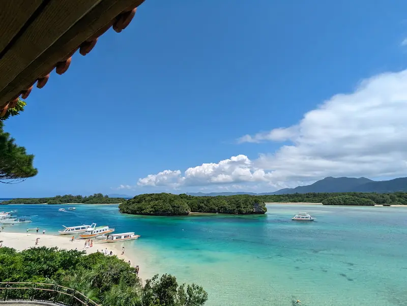
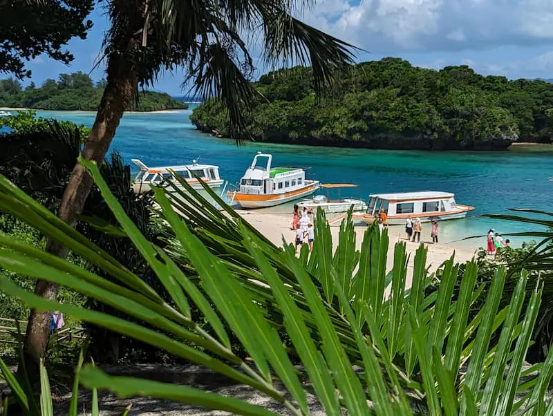
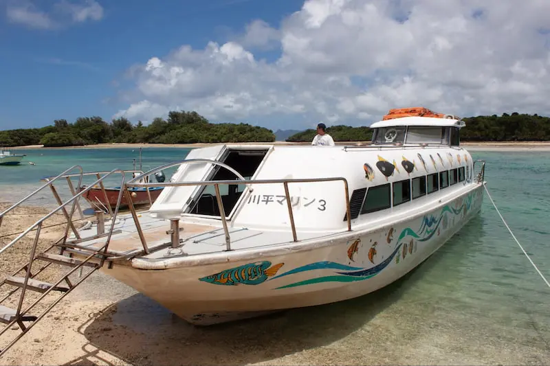
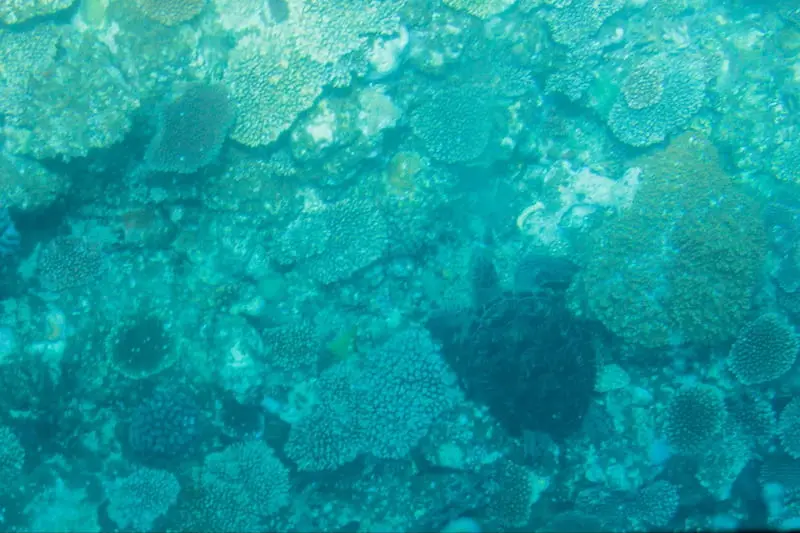
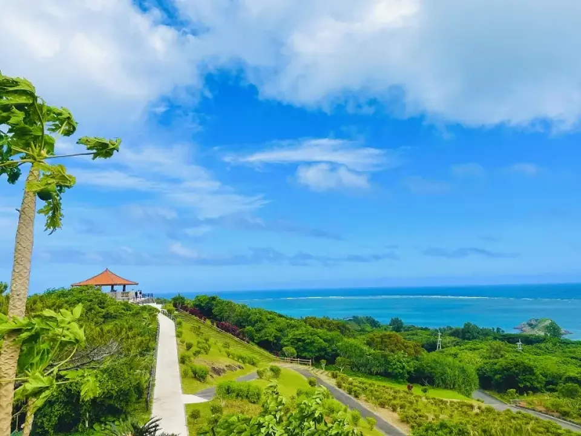
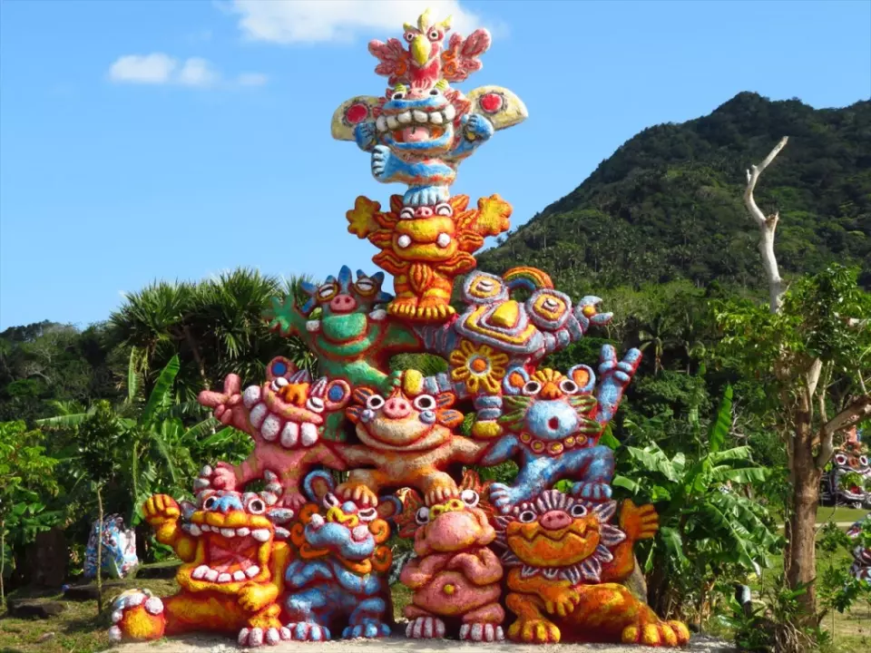
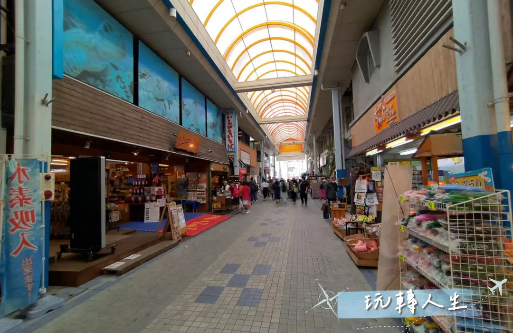
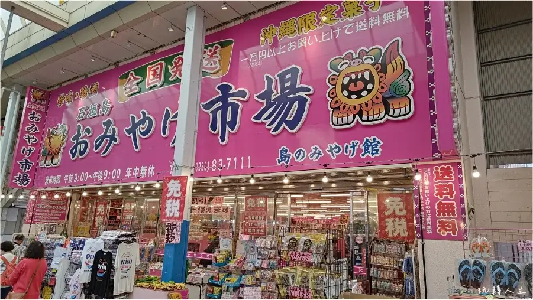

📍 最佳動線（輕鬆、美景、不趕船）
➡ 港口 → 川平灣 → 玻璃底船 → 玉取崎展望台 → 午餐（石垣牛）→ 伴手禮購買 → 回港
🚩 景點 1：川平灣（米其林三星絕景）
石垣島最具代表性的翡翠漸層海色，被米其林旅遊指南評為三星景點，是第一次造訪必到之處。
📸 景點亮點與拍照位置
- 觀景台俯瞰翡翠海色層次
- 白沙與小船構圖最經典
- 玻璃船可選擇體驗（視時間彈性）


🕒 建議停留：45–60 分鐘
🚗 車程：石垣港 → 約 35 分鐘
導航到川平灣
🌧 雨天備案： 石垣市立八重山博物館（室內）
🚩 景點 2：玻璃底船（全程坐著）
最輕鬆欣賞珊瑚與熱帶魚的方式，全程坐著不走路，長輩也能輕鬆參加。


🕒 09:00–17:00（每 15–20 分一班）
💰 約 ¥1200–1500
🚗 車程：川平灣 → 3 分鐘
🕒 建議停留：40 分鐘
導航到玻璃底船
🌧 雨天備案： Minsa 工藝館（室內）
🚩 景點 3：玉取崎展望台（平緩步道）
步道平緩、視野開闊，海灣呈 S 型，途中設置座椅可休息，是輕鬆路線首選。
📸 景點亮點與拍照位置
- 海岸線曲線＋藍色分層的全景視野
- 觀景台向南視角最美最佳取景
- 入口處「風獅爺」雕像，象徵守護與祈福
- 步道平穩、體力負擔小，長輩也可輕鬆散步


🕒 停留建議：30 分鐘
🚗 車程：玻璃底船 → 約 20 分鐘
🔎 小知識：風獅爺（シーサー）是琉球傳統守護象徵，
常見於入口、屋頂與展望台周邊，被視為旅途平安的象徵。
導航到玉取崎展望台
🌧 雨天備案： 公設市場（室內、多商店）
🍽 午餐：石垣島餐廳建議（不踩雷、依喜好選擇）
從玉取崎展望台返回市區後用餐最順，不趕船、好停車、選擇多。以下三種風格可依家人喜好決定。
🥩 選項 1：石垣牛 MARU（人氣名店）
- 石垣牛品質穩定、口碑最佳
- 適合想吃特色、紀念旅行的一餐
- 環境舒適、家庭友善
📌 必點：壽喜燒、烤肉套餐
🕒 用餐建議：60–80 分鐘
🚗 車程：玉取崎展望台 → 約 25 分鐘
導航到 MARU
🍜 選項 2：明石食堂（免預約、份量足）
- 八重山麵＋三層肉評價極高
- 不需預訂，不怕排不上
- 適合想快一點、不想等候的旅客
📌 必點：ソーキそば（三層肉麵）
🕒 用餐建議：45–60 分鐘
🚗 車程：玉取崎展望台 → 約 18 分鐘
導航到明石食堂
🌊 選項 3：Café 藍（海景、舒適休息）
- 面海座位、氛圍最佳
- 適合走累了想坐久一點的旅客
- 甜點與輕食皆有，不會太飽
📌 必點：海景窗座位、舒芙蕾
🕒 用餐建議：60–80 分鐘
🚗 車程：玉取崎展望台 → 約 22 分鐘
導航到 Café 藍
若餐廳客滿，可改：
1. 金城牛排（份量足、出餐快）
2. 公設市場周邊小吃（多選擇、不怕沒位）
3. 回船前 A&W（快速、全齡適合）
🚩 景點 3：石垣公設市場（伴手禮＋點心散步）
最方便採買石垣特色商品的區域，從黑糖、海葡萄、土產到小食都能一次完成。


🕒 建議停留：45–60 分鐘
🚗 車程：午餐地 → 約 5–10 分鐘
🛍 推薦採買 & 小吃亮點
- 川平黑糖霜淇淋
- 八重山點心與餅乾
- 海葡萄現買現吃
- 石垣牛肉乾伴手禮
導航到公設市場
若不想購物，可改：
1. 港口海濱散步
2. A&W 休息喝 Root Beer
3. 回船享受甲板陽光
🎁 石垣島必買伴手禮
1. 石垣島辣油（辺銀食堂）
2. 八重山黑糖
3. 石垣海鹽
4. 島胡椒（ピパーチ）
5. 石垣啤酒限定瓶身
6. 島蜂蜜
7. 石垣牛咖哩調理包